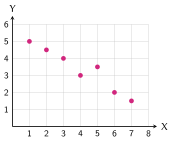
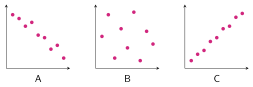

📝 Repaso de la unidad
Actividades de repaso
Escribe tu respuesta y después pulsa «Ver la solución» para corregirla tú. Los puntos dicen el nivel: ● básico, ●●● ampliación.
Se quiere estudiar el sueldo medio de los habitantes de un país. Como es imposible preguntar a todos, se encuesta a 5000 personas. Identifica la población y la muestra en este estudio.
Solución
Población: Habitantes del país. Muestra: 5000 personas.
¿Cómo te ha ido?
Indica si la variable «color favorito» es cualitativa o cuantitativa.
Solución
Cualitativa.
¿Cómo te ha ido?
Indica si la variable «número de goles en un partido» es cuantitativa continua o discreta.
Solución
Cuantitativa discreta.
¿Cómo te ha ido?
Clasifica la variable estadística: «Tiempo que se tarda en correr 100 metros lisos».
Solución
Cuantitativa continua.
¿Cómo te ha ido?
Clasifica la variable estadística: «Talla de camiseta de los alumnos de una clase (S, M, L, XL)».
Solución
Cualitativa.
¿Cómo te ha ido?
El Ayuntamiento de Santander quiere saber cuántas veces al mes van sus vecinos a la biblioteca municipal. Para ello pregunta a 400 vecinos elegidos al azar. Indica la población, la muestra y la variable estadística, y clasifica la variable.
Solución
Población: los vecinos de Santander. Muestra: los 400 vecinos encuestados. Variable: número de visitas a la biblioteca al mes, cuantitativa discreta.
¿Cómo te ha ido?
- Marca del teléfono móvil.
- Temperatura del agua del mar.
- Número de libros que llevas en la mochila.
- Tiempo de espera en la parada del autobús.
- Grupo sanguíneo.
- Número de personas que viven en un hogar.
Solución
a) Cualitativa. b) Cuantitativa continua. c) Cuantitativa discreta. d) Cuantitativa continua. e) Cualitativa. f) Cuantitativa discreta.
¿Cómo te ha ido?
Decide en cada caso si conviene estudiar toda la población o solo una muestra, y explica por qué.
- La duración de las bombillas que fabrica una empresa.
- La estatura de los 25 alumnos de tu clase.
- La intención de voto de los españoles en unas elecciones.
Solución
a) Una muestra: para medir la duración hay que gastar la bombilla. b) La población: son pocos y es fácil medirlos a todos. c) Una muestra: la población es demasiado grande.
¿Cómo te ha ido?
Para saber si a los jóvenes de Cantabria les gusta el fútbol, Pedro pregunta a 50 personas a la salida de un partido en El Sardinero. Concluye que al 96 % de los jóvenes cántabros les gusta el fútbol. ¿Es correcta su conclusión? ¿Cómo debería elegir la muestra?
Solución
No: la muestra no es representativa, porque casi todos los que salen de un partido son aficionados. Debería elegir al azar jóvenes de distintos municipios, edades y aficiones.
¿Cómo te ha ido?
Inventa una variable cualitativa, una cuantitativa discreta y una cuantitativa continua relacionadas con el deporte.
Solución
Respuesta abierta. Por ejemplo: deporte practicado (cualitativa), número de partidos jugados en un mes (discreta) y tiempo en recorrer 5 km (continua).
¿Cómo te ha ido?
Una empresa de Reinosa fabrica 12 000 piezas al día. Cada día revisa 300 piezas elegidas al azar y hoy ha encontrado 9 defectuosas.
- Indica la población y la muestra.
- ¿Qué porcentaje de piezas defectuosas hay en la muestra?
- Estima cuántas piezas defectuosas se han fabricado hoy.
Solución
a) Población: las 12 000 piezas del día. Muestra: las 300 revisadas. b) \(\frac{9}{300}=0{,}03\), el 3 %. c) \(0{,}03\cdot 12\,000=360\) piezas.
¿Cómo te ha ido?
El Ayuntamiento de Torrelavega quiere decidir si amplía el carril bici. Para conocer la opinión de los vecinos, publica una encuesta en su página web durante dos semanas. En ella pregunta: si usan la bicicleta para moverse por la ciudad, cuántos viajes en bicicleta hacen a la semana y cuántos kilómetros recorren en total cada semana. Responden 850 personas y el 70 % dice que usa la bicicleta a diario. Con ese dato, un concejal afirma en la prensa que «siete de cada diez vecinos de Torrelavega van en bici».
- ¿Cuál es la población del estudio? ¿Y la muestra?
- Clasifica las tres variables que se estudian.
- ¿Crees que la muestra es representativa? ¿Es correcta la afirmación del concejal?
- Propón otra forma de elegir la muestra.
Solución
a) Población: los vecinos de Torrelavega. Muestra: las 850 personas que responden. b) Usar la bicicleta: cualitativa; número de viajes: cuantitativa discreta; kilómetros recorridos: cuantitativa continua. c) No: responden sobre todo los vecinos interesados en la bici, que entran en la web por ese motivo, así que la afirmación no está justificada. d) Por ejemplo, llamar o preguntar a vecinos elegidos al azar del padrón, de distintos barrios y edades.
¿Cómo te ha ido?
¿Cuánto debe sumar siempre la columna completa de las frecuencias relativas (\(h_i\)) en cualquier estudio estadístico?
Solución
\(1\) (o el \(100\%\)).
¿Cómo te ha ido?
Se ha preguntado a 20 familias cuántas mascotas tienen. Completa la tabla con las frecuencias relativas y las absolutas acumuladas.
| \(x_i\) | \(f_i\) | \(h_i\) | \(F_i\) |
| 0 | 8 | ||
| 1 | 6 | ||
| 2 | 4 | ||
| 3 | 2 |
Solución
\(h_i\): 0,4; 0,3; 0,2; 0,1. \(F_i\): 8, 14, 18, 20.
¿Cómo te ha ido?
En una muestra de 50 personas, la frecuencia relativa de un valor es 0,16. ¿Cuál es su frecuencia absoluta?
Solución
\(f_i=0{,}16\cdot 50=8\).
¿Cómo te ha ido?
Práctica de datos: Se ha preguntado a 15 familias por el número de televisores que tienen en casa, obteniendo los siguientes datos: 2, 1, 2, 3, 1, 1, 2, 4, 3, 2, 1, 2, 1, 3, 2. Construye una tabla con la frecuencia absoluta (\(f_i\)) de cada valor.
Solución
\(f_1=5\), \(f_2=6\), \(f_3=3\), \(f_4=1\).
¿Cómo te ha ido?
A partir de los datos de la actividad anterior, calcula la frecuencia relativa (\(h_i\)) para las familias que tienen exactamente 2 televisores.
Solución
\(h_2 = 0,4\).
¿Cómo te ha ido?
Práctica de datos: Las notas en matemáticas de 10 alumnos son: 5, 6, 5, 8, 7, 5, 6, 9, 8, 5. ¿Cuál es la frecuencia absoluta acumulada (\(F_i\)) de la nota 6?
Solución
\(F = 6\).
¿Cómo te ha ido?
En una clase de 25 alumnos, 10 vienen andando al instituto, 8 en autobús, 5 en coche y 2 en bicicleta. Expresa en porcentaje la frecuencia de cada medio de transporte.
Solución
Andando: 40 %. Autobús: 32 %. Coche: 20 %. Bicicleta: 8 %.
¿Cómo te ha ido?
Estos son los goles que ha marcado un equipo en 16 partidos de liga:
0, 1, 2, 1, 3, 0, 1, 2, 2, 1, 0, 4, 1, 2, 1, 3
Construye la tabla de frecuencias absolutas, relativas y absolutas acumuladas. ¿En cuántos partidos marcó como mucho 2 goles?
Solución
\(x_i\): 0, 1, 2, 3, 4. \(f_i\): 3, 6, 4, 2, 1. \(h_i\): 0,1875; 0,375; 0,25; 0,125; 0,0625. \(F_i\): 3, 9, 13, 15, 16. Marcó como mucho 2 goles en 13 partidos.
¿Cómo te ha ido?
Completa los huecos de esta tabla de frecuencias.
| \(x_i\) | \(f_i\) | \(F_i\) | \(h_i\) |
| 1 | 4 | 4 | |
| 2 | 11 | ||
| 3 | 5 | ||
| 4 | 20 |
Solución
\(f_2=7\), \(F_3=16\), \(f_4=4\), \(N=20\). \(h_i\): 0,2; 0,35; 0,25; 0,2.
¿Cómo te ha ido?
Las notas de 20 alumnos en un examen de Matemáticas han sido:
4, 5, 5, 6, 7, 5, 8, 6, 6, 9, 3, 5, 6, 7, 7, 6, 10, 5, 6, 8
- Construye la tabla de frecuencias absolutas y absolutas acumuladas.
- ¿Qué porcentaje de alumnos ha aprobado?
- ¿Qué porcentaje ha sacado un 6 o menos?
Solución
a) \(x_i\): 3, 4, 5, 6, 7, 8, 9, 10. \(f_i\): 1, 1, 5, 6, 3, 2, 1, 1. \(F_i\): 1, 2, 7, 13, 16, 18, 19, 20. b) Han aprobado 18 de 20, el 90 %. c) \(\frac{13}{20}\), el 65 %.
¿Cómo te ha ido?
Se ha anotado el tiempo, en minutos, que tardan 20 alumnos en llegar al instituto: 6 tardan entre 0 y 10 minutos, 8 entre 10 y 20, 4 entre 20 y 30 y 2 entre 30 y 40.
- Construye la tabla con los intervalos, sus marcas de clase, \(f_i\), \(h_i\) y \(F_i\).
- ¿Cuántos alumnos tardan menos de 20 minutos?
- ¿Qué porcentaje tarda 20 minutos o más?
Solución
a) Intervalos \([0,10)\), \([10,20)\), \([20,30)\), \([30,40)\). Marcas: 5, 15, 25, 35. \(f_i\): 6, 8, 4, 2. \(h_i\): 0,3; 0,4; 0,2; 0,1. \(F_i\): 6, 14, 18, 20. b) 14 alumnos. c) El 30 %.
¿Cómo te ha ido?
Se ha lanzado un dado 30 veces con estos resultados:
3, 5, 1, 6, 2, 4, 4, 6, 1, 3, 5, 2, 6, 6, 3, 1, 4, 5, 2, 6, 3, 3, 4, 1, 5, 6, 2, 4, 3, 6
Escribe los resultados en la columna A de una hoja de cálculo. En D1 escribe =CONTAR.SI(A1:A30;1) y haz lo mismo para el resto de caras. Calcula también las frecuencias relativas dividiendo entre 30. ¿Qué cara ha salido más veces? ¿Te parece que el dado está trucado?
Solución
\(f_i\): cara 1: 4; cara 2: 4; cara 3: 6; cara 4: 5; cara 5: 4; cara 6: 7. \(h_i\approx\) 0,13; 0,13; 0,20; 0,17; 0,13; 0,23. Ha salido más el 6. Con solo 30 lanzamientos las diferencias son normales: no se puede decir que esté trucado.
¿Cómo te ha ido?
En una tabla de frecuencias con \(N=40\) datos, la frecuencia relativa acumulada del tercer valor es \(H_3=0{,}65\) y la del cuarto es \(H_4=0{,}90\). ¿Cuántos datos toman el cuarto valor? ¿Cuántos datos son mayores que el cuarto valor?
Solución
\(h_4=0{,}90-0{,}65=0{,}25\), así que \(f_4=0{,}25\cdot 40=10\) datos. Mayores que el cuarto valor hay \(0{,}10\cdot 40=4\) datos.
¿Cómo te ha ido?
Una heladería en Comillas quiere mostrar visualmente cuál es el sabor de helado favorito de sus clientes durante el verano. ¿Qué tipo de gráfico estadístico es el más adecuado para representar esta información?
Solución
Un diagrama de barras o de sectores.
¿Cómo te ha ido?
Para dibujar un diagrama de sectores, necesitamos calcular los grados de cada porción. Si en una encuesta a 40 personas, 10 afirman que su playa favorita es la de Somo, ¿cuántos grados le corresponden a ese sector circular?
Solución
\(90^\circ\).
¿Cómo te ha ido?
El siguiente gráfico muestra el número de días que ha llovido en Santander durante los primeros cuatro meses del año. ¿En qué mes llovió más y cuántos días fueron?
Solución
En el mes de marzo, con 18 días de lluvia.
¿Cómo te ha ido?
¿Es correcto representar el número de hermanos de los alumnos de tu clase (0, 1, 2, 3...) utilizando un histograma donde las barras estén pegadas?
Solución
No: un diagrama de barras separadas.
¿Cómo te ha ido?
Al mirar un diagrama de barras sobre el número de mascotas (0, 1, 2, 3) que tienen las familias de un edificio, observas que la barra del «0» no existe. ¿Qué significa esto estadísticamente?
Solución
Su frecuencia absoluta es cero: todas las familias tienen alguna mascota.
¿Cómo te ha ido?
En un diagrama de sectores que representa el medio de transporte usado por los alumnos de un instituto de Torrelavega, el sector correspondiente al «Autobús» mide \(120^\circ\). ¿Qué porcentaje de alumnos utiliza el autobús?
Solución
\(33,33\%\)
¿Cómo te ha ido?
Se ha registrado el peso (en kg) de los recién nacidos en el Hospital Marqués de Valdecilla durante una semana. Como los pesos son datos numéricos con muchos decimales (ej. \(3,250\) kg, \(2,980\) kg), se han agrupado en intervalos: \([2{,}5;\ 3{,}0)\), \([3{,}0;\ 3{,}5)\), etc. ¿Cuál es el gráfico estadístico correcto para representar esta distribución?
Solución
Un histograma.
¿Cómo te ha ido?
En un diagrama de barras que muestra las notas (del 1 al 10) de un examen de matemáticas, ¿cómo identificarías visualmente cuál es la moda de la clase sin tener que hacer ningún cálculo?
Solución
Es la nota de la barra más alta.
¿Cómo te ha ido?
En una tienda de productos típicos de Potes, se vendieron 50 cajas de sobaos, 30 quesadas y 20 tarros de miel. Si quieres dibujar un diagrama de sectores para representar estas ventas, ¿cuántos grados medirá el sector de las quesadas?
Solución
\(108^\circ\).
¿Cómo te ha ido?
El polideportivo municipal de Laredo quiere representar el número de abonados que se apuntan a diferentes deportes. El director empieza a dibujar un histograma. ¿Qué error está cometiendo?
Solución
Debería usar un diagrama de barras.
¿Cómo te ha ido?
Para representar el porcentaje de uso de tres redes sociales (Instagram 50%, TikTok 30%, X 20%) entre los jóvenes cántabros, se decide usar un diagrama de sectores. Calcula el ángulo para TikTok.
Solución
El 30% corresponde a \(0,30 \cdot 360^\circ = 108^\circ\).
¿Cómo te ha ido?
Sabiendo que un instituto tiene 200 alumnos matriculados en 3º de la ESO, se realiza un diagrama de sectores sobre sus actividades extraescolares. Si el sector de «Surf» mide \(54^\circ\), ¿cuántos alumnos practican surf?
Solución
30 alumnos.
¿Cómo te ha ido?
Un parque natural analiza la evolución mensual de visitantes. Para ver la tendencia a lo largo del año (subidas y bajadas mes a mes), ¿qué gráfico derivado del diagrama de barras se suele utilizar trazando líneas entre los puntos más altos?
Solución
Un polígono de frecuencias (o diagrama de líneas).
¿Cómo te ha ido?
En un diagrama de sectores, una variable tiene una frecuencia relativa de \(0,25\). ¿Cuál es la amplitud en grados del sector correspondiente y qué fracción del círculo representa?
Solución
\(90^\circ\); \(\frac{1}{4}\) del círculo.
¿Cómo te ha ido?
Si tenemos un histograma de las alturas de un grupo de personas y todos los intervalos tienen la misma amplitud (ej. de 10 en 10 cm), ¿qué representa el área de cada rectángulo del histograma?
Solución
La frecuencia absoluta del intervalo (es proporcional a ella).
¿Cómo te ha ido?
¿Puede calcularse la media aritmética de la variable «Deporte favorito»?
Solución
No.
¿Cómo te ha ido?
Práctica de datos: Un concesionario ha vendido en una semana coches de los siguientes colores: Rojo, Blanco, Negro, Blanco, Gris, Rojo, Blanco. Indica cuál es la moda.
Solución
\(M_o = \text{Blanco}\).
¿Cómo te ha ido?
Calcula la media aritmética de los siguientes datos aislados: 12, 14, 15, 12, 17.
Solución
\(\bar{x} = 14\).
¿Cómo te ha ido?
Halla la mediana de los siguientes datos: 2, 8, 4, 10, 5.
Solución
\(M_e = 5\).
¿Cómo te ha ido?
Halla la mediana de esta serie con un número par de datos: 3, 5, 7, 9, 11, 13.
Solución
\(M_e = 8\).
¿Cómo te ha ido?
En un instituto de educación secundaria, se ha realizado un estudio sobre las calificaciones en matemáticas de 10 estudiantes de una clase elegida al azar. Las notas obtenidas (sobre 10) son: 6, 7, 8, 5, 9, 7, 8, 6, 7, 8. Calcula la media aritmética de las calificaciones.
Solución
Media = 7,1.
¿Cómo te ha ido?
Una tienda de ropa desea analizar el número de prendas vendidas diariamente durante 15 días de campaña. Datos: 12, 15, 14, 16, 12, 18, 14, 15, 13, 17, 14, 16, 15, 14, 13 prendas/día. ¿Cuál es la media aritmética de las prendas vendidas?
Solución
Media \(\approx\) 14,53 prendas/día.
¿Cómo te ha ido?
Una estación meteorológica ha registrado las temperaturas máximas en °C durante 12 días consecutivos en otoño. Datos: 18, 19, 20, 18, 21, 19, 20, 18, 19, 22, 20, 19 °C. ¿Cuál es la mediana de estas temperaturas?
Solución
Mediana = 19 °C.
¿Cómo te ha ido?
En una encuesta sobre el número de hermanos que tienen los estudiantes de un colegio, se preguntó a 14 alumnos seleccionados al azar. Datos: 0, 1, 2, 1, 3, 1, 0, 2, 1, 1, 2, 0, 1, 2 hermanos. ¿Cuál es la moda del número de hermanos?
Solución
Moda = 1 hermano.
¿Cómo te ha ido?
Una empresa de telemarketing registra el tiempo en minutos que tardan 10 operadores en completar una llamada. Datos: 4, 5, 3, 6, 4, 5, 4, 7, 5, 6 minutos. ¿Cuál es la moda de estos tiempos?
Solución
Moda = 4 y 5 minutos (bimodal).
¿Cómo te ha ido?
Un centro de fitness registra el número de clientes que asisten diariamente durante 16 días. Datos: 32, 38, 35, 40, 36, 38, 34, 39, 37, 38, 36, 41, 35, 38, 37, 39 clientes. ¿Cuál es la mediana del número de asistentes?
Solución
Mediana = 37,5 clientes.
¿Cómo te ha ido?
En un estudio sobre el consumo de café, se registra el número de tazas que beben diariamente 12 personas. Datos: 0, 1, 2, 1, 3, 2, 4, 1, 2, 3, 1, 2 tazas. ¿Cuál es la moda del número de tazas de café?
Solución
Moda = 1 y 2 tazas (bimodal).
¿Cómo te ha ido?
Práctica de datos: Se ha anotado la temperatura máxima (en grados) de una ciudad durante una semana: 20, 22, 21, 25, 22, 24, 20. Calcula la media, la moda y la mediana.
Solución
\(\bar{x} = 22\), \(M_o = 20 \text{ y } 22\), \(M_e = 22\).
¿Cómo te ha ido?
- 3, 8, 5, 12, 7
- \(-2\), 4, 0, 5, \(-6\)
- 1,5; 2,8; 0,9; 3,1
Solución
a) \(R=12-3=9\). b) \(R=5-(-6)=11\). c) \(R=3{,}1-0{,}9=2{,}2\).
¿Cómo te ha ido?
Calcula la desviación típica de los datos 7, 7, 7, 7. ¿Qué significa que la desviación típica valga cero?
Solución
\(\sigma=0\). Significa que no hay dispersión: todos los datos son iguales a la media.
¿Cómo te ha ido?
Un fabricante de botellas realiza un control de calidad midiendo la capacidad en ml de una muestra de 10 botellas. Datos: 500, 502, 498, 501, 499, 503, 497, 500, 502, 498 ml. ¿Cuál es el rango de la muestra?
Solución
Rango = 6 ml.
¿Cómo te ha ido?
En un estudio sobre hábitos de lectura, se preguntó a 12 personas cuántos libros habían leído en el último año. Datos: 0, 2, 3, 1, 4, 2, 5, 1, 3, 2, 4, 6 libros. ¿Cuáles son los valores de Q1 y Q3?
Solución
\(Q_1 = 1,5\) libros; \(Q_3 = 4\) libros.
¿Cómo te ha ido?
Ana calcula la varianza de \(2, 4, 6\) así: \(\frac{(2-4)+(4-4)+(6-4)}{3}=0\). Explica el error y calcula la varianza y la desviación típica.
Solución
Varianza: \(\frac{8}{3}\approx 2{,}67\). Desviación típica: \(\approx 1{,}63\).
¿Cómo te ha ido?
Calcula la media, la varianza y la desviación típica de los datos 3, 5, 7, 9, 11.
Solución
\(\bar{x}=7\); \(\sigma^2=\frac{16+4+0+4+16}{5}=8\); \(\sigma=\sqrt{8}\approx 2{,}83\).
¿Cómo te ha ido?
Se ha preguntado a 20 familias por su número de hijos. Calcula la media, la varianza y la desviación típica.
| \(x_i\) | 0 | 1 | 2 | 3 |
| \(f_i\) | 4 | 8 | 6 | 2 |
Solución
\(\bar{x}=\frac{0+8+12+6}{20}=1{,}3\); \(\sigma^2=\frac{0+8+24+18}{20}-1{,}3^2=2{,}5-1{,}69=0{,}81\); \(\sigma=0{,}9\).
¿Cómo te ha ido?
Durante una semana de verano, las temperaturas máximas de cinco días en Santander han sido 18, 19, 20, 19 y 19 ºC, y en Madrid, 10, 15, 20, 25 y 25 ºC.
- Comprueba que la media es la misma en las dos ciudades.
- Calcula la desviación típica de cada ciudad.
- ¿En qué ciudad ha sido más variable la temperatura?
Solución
a) En las dos, \(\bar{x}=19\) ºC. b) Santander: \(\sigma=\sqrt{0{,}4}\approx 0{,}63\) ºC. Madrid: \(\sigma=\sqrt{34}\approx 5{,}83\) ºC. c) En Madrid.
¿Cómo te ha ido?
El peso de un grupo de elefantes tiene media 5000 kg y desviación típica 400 kg. El de un grupo de ratones tiene media 25 g y desviación típica 4 g. Usa el coeficiente de variación para decidir qué grupo tiene los pesos más dispersos.
Solución
Elefantes: \(CV=\frac{400}{5000}=0{,}08\) (8 %). Ratones: \(CV=\frac{4}{25}=0{,}16\) (16 %). Los pesos de los ratones son más dispersos.
¿Cómo te ha ido?
Una clínica pediátrica registra el peso en kg de 8 bebés nacidos durante una semana. Datos: 3,2, 3,5, 3,1, 3,4, 3,3, 3,2, 3,6, 3,1 kg. ¿Cuál es la desviación típica de los pesos?
Solución
Desviación típica \(\approx\) 0,17 kg.
¿Cómo te ha ido?
Un laboratorio analiza los tiempos de reacción en segundos de 9 voluntarios en un experimento. Datos: 0,45, 0,62, 0,38, 0,55, 0,48, 0,60, 0,42, 0,58, 0,50 segundos. ¿Cuáles son la mediana y la desviación típica?
Solución
Mediana = 0,50 s; Desviación típica \(\approx\) 0,08 s.
¿Cómo te ha ido?
Las notas de tres alumnos son 4, 6 y 8.
- Calcula la media y la desviación típica.
- El profesor sube 2 puntos a cada alumno. ¿Cómo cambian la media y la desviación típica?
- Si en vez de eso se multiplicaran todas las notas por 2, ¿qué ocurriría?
Solución
a) \(\bar{x}=6\); \(\sigma=\sqrt{\frac{8}{3}}\approx 1{,}63\). b) Notas 6, 8, 10: la media sube a 8 y la desviación típica no cambia, porque los datos se desplazan pero siguen igual de separados. c) Notas 8, 12, 16: la media y la desviación típica se duplican: \(\bar{x}=12\), \(\sigma\approx 3{,}27\).
¿Cómo te ha ido?
Doce alumnos han anotado las horas que duermen una noche de diario:
8, 7, 9, 6, 8, 7, 8, 9, 7, 6, 8, 9
Escribe los datos en una hoja de cálculo y calcula la media con PROMEDIO, la desviación típica con DESVEST.P y el coeficiente de variación. Si los médicos recomiendan dormir entre 8 y 10 horas a esta edad, ¿qué porcentaje de los alumnos lo cumple?
Solución
\(\bar{x}\approx 7{,}67\) h; \(\sigma\approx 1{,}03\) h; \(CV\approx 0{,}13\) (13 %). Duermen 8 horas o más 7 de los 12 alumnos, un 58 % aproximadamente.
¿Cómo te ha ido?
En una distribución bidimensional, ¿qué nombre específico recibe la gráfica sobre ejes cartesianos donde se representan los pares de puntos \((x_i, y_i)\)?
Solución
Nube de puntos.
¿Cómo te ha ido?
Indica si cada estudio es unidimensional o bidimensional.
- La estatura de los alumnos de una clase.
- La estatura y el peso de los alumnos de una clase.
- La temperatura de cada día y el consumo de electricidad de una ciudad.
- El número de hermanos de los alumnos de un instituto.
Solución
a) Unidimensional. b) Bidimensional. c) Bidimensional. d) Unidimensional.
¿Cómo te ha ido?
Esta tabla recoge la edad (\(X\), en años) y la estatura (\(Y\), en cm) de cinco niños. Escribe los pares \((x_i,y_i)\) e indica cuántos individuos hay y cuáles son las variables.
| \(X\) | 4 | 6 | 8 | 10 | 12 |
| \(Y\) | 102 | 115 | 128 | 138 | 149 |
Solución
\((4,102)\), \((6,115)\), \((8,128)\), \((10,138)\), \((12,149)\). Hay 5 individuos. Las variables son la edad y la estatura.
¿Cómo te ha ido?
Una heladería anota la temperatura máxima (\(X\), en ºC) y los helados vendidos (\(Y\)) durante cinco días:
| \(X\) | 10 | 15 | 20 | 25 | 30 |
| \(Y\) | 40 | 52 | 61 | 75 | 85 |
Introduce los datos en una hoja de cálculo, dibuja la nube de puntos y calcula el coeficiente de correlación con COEF.DE.CORREL y la recta de regresión con PENDIENTE e INTERSECCION.EJE. ¿Cuántos helados se estima vender a 35 ºC?
Solución
\(r\approx 0{,}998\); \(y=2{,}26x+17{,}4\). A 35 ºC, unos 96 helados.
¿Cómo te ha ido?
Calcula las medias \(\bar{x}\) e \(\bar{y}\) de esta distribución bidimensional y describe la forma que tendrá su nube de puntos.
| \(X\) | 2 | 4 | 6 | 8 |
| \(Y\) | 10 | 8 | 7 | 3 |
Solución
\(\bar{x}=5\); \(\bar{y}=7\). Cuando \(X\) aumenta, \(Y\) disminuye: la nube es descendente.
¿Cómo te ha ido?
Representa la nube de puntos de las horas de sol (\(X\)) y la temperatura máxima (\(Y\), en ºC) de seis días de primavera en Laredo. ¿Qué relación observas?
| \(X\) | 2 | 4 | 5 | 7 | 8 | 10 |
| \(Y\) | 12 | 14 | 16 | 19 | 20 | 23 |
Solución
Los puntos suben de izquierda a derecha y están casi alineados: hay una relación positiva fuerte, a más horas de sol, más temperatura.
¿Cómo te ha ido?
En esta nube de puntos, cada punto es un alumno: \(X\) son las horas de deporte a la semana e \(Y\), las horas diarias delante de una pantalla.

- ¿Cuántos alumnos hay en el estudio?
- ¿Cuántas horas de pantalla tiene el alumno que más deporte hace?
- ¿Qué tendencia sigue la nube de puntos?
Solución
a) 7 alumnos. b) Hace 7 horas de deporte y pasa 1,5 horas al día ante una pantalla. c) Es descendente: los alumnos que hacen más deporte tienden a pasar menos tiempo ante una pantalla.
¿Cómo te ha ido?
Ocho alumnos han obtenido estas notas en Matemáticas (\(X\)) y en Física (\(Y\)):
| \(X\) | 3 | 5 | 6 | 7 | 8 | 4 | 9 | 6 |
| \(Y\) | 4 | 5 | 7 | 6 | 8 | 3 | 9 | 6 |
Calcula las medias de las dos variables, dibuja la nube de puntos y di si te parece que las notas están relacionadas.
Solución
\(\bar{x}=6\); \(\bar{y}=6\). La nube es ascendente y los puntos están próximos a una recta: las notas están relacionadas positivamente.
¿Cómo te ha ido?
Práctica de datos: Dada la siguiente muestra sobre goles a favor (\(X\)) y puntos en la liga (\(Y\)) de 3 equipos: (10 goles, 15 pts), (20 goles, 30 pts), (30 goles, 45 pts). Calcula las medias \(\bar{x}\) e \(\bar{y}\).
Solución
\(\bar{x} = 20, \bar{y} = 30\).
¿Cómo te ha ido?
La covarianza mide cómo varían juntas dos variables y se calcula con la fórmula \(\sigma_{xy}=\frac{\sum x_i y_i}{N}-\bar{x}\cdot\bar{y}\). Calcula la covarianza de esta distribución e indica qué te dice su signo.
| \(X\) | 1 | 2 | 3 | 4 |
| \(Y\) | 2 | 3 | 5 | 6 |
Solución
\(\bar{x}=2{,}5\); \(\bar{y}=4\); \(\frac{2+6+15+24}{4}=11{,}75\); \(\sigma_{xy}=11{,}75-10=1{,}75\). Es positiva: las dos variables tienden a crecer a la vez.
¿Cómo te ha ido?
El club de surf de Liencres ha decidido estudiar si el viento influye en las olas. Durante ocho mañanas de octubre, una monitora ha medido con un anemómetro la velocidad del viento (\(X\), en km/h) y, a la misma hora, ha estimado la altura de las olas (\(Y\), en metros) en la playa de Valdearenas. Ha anotado sus datos en esta tabla:
| \(X\) | 10 | 15 | 20 | 25 | 30 | 35 | 40 | 45 |
| \(Y\) | 0,8 | 1,0 | 1,2 | 1,5 | 1,5 | 1,8 | 2,0 | 2,5 |
La monitora dice que los días de mucho viento las olas son siempre más altas, pero el director del club cree que no hay relación.
- ¿Cuáles son los individuos y las variables de este estudio?
- Calcula la velocidad media del viento y la altura media de las olas.
- Dibuja la nube de puntos. ¿Quién tiene razón?
Solución
a) Los individuos son las ocho mañanas; las variables, la velocidad del viento y la altura de las olas. b) \(\bar{x}=27{,}5\) km/h; \(\bar{y}\approx 1{,}54\) m. c) La nube es ascendente y casi alineada: tiene razón la monitora, hay una relación positiva fuerte.
¿Cómo te ha ido?
Indica el tipo de correlación más lógico (positiva, negativa o nula) entre las variables: «Edad de un coche» y «Su precio de venta en el mercado de segunda mano».
Solución
Negativa.
¿Cómo te ha ido?
Indica el tipo de correlación más lógico entre: «Días de lluvia en un mes» y «Unidades de paraguas vendidos».
Solución
Positiva.
¿Cómo te ha ido?
Indica el tipo de correlación más lógico entre: «Número de pie que calza una persona» y «Su sueldo mensual».
Solución
Nula.
¿Cómo te ha ido?
Asocia cada nube de puntos con uno de estos coeficientes de correlación: \(r=0{,}97\), \(r=-0{,}85\) y \(r=0{,}05\).

Solución
A: \(r=-0{,}85\). B: \(r=0{,}05\). C: \(r=0{,}97\).
¿Cómo te ha ido?
Hemos calculado el coeficiente de correlación de Pearson (\(r\)) en un estudio y hemos obtenido \(r = -0,92\). ¿Qué interpretación haces de este resultado?
Solución
Correlación lineal negativa fuerte.
¿Cómo te ha ido?
Si la nube de puntos de un estudio estadístico sube de izquierda a derecha de forma muy compacta, ¿qué signo tendrá su covarianza y el coeficiente de Pearson?
Solución
Positivo.
¿Cómo te ha ido?
Práctica de datos: Considera la siguiente tabla bidimensional reducida:
X: 1, 2, 3
Y: 2, 4, 6
Sabiendo que la correlación es positiva perfecta, ¿cuál será el coeficiente de Pearson (\(r\))?
Solución
\(r = 1\).
¿Cómo te ha ido?
Indica si es verdadero o falso y justifica tu respuesta.
- Un coeficiente de correlación \(r=0{,}95\) indica una relación lineal fuerte y positiva.
- Un coeficiente \(r=-0{,}9\) indica una relación muy débil.
- La recta de regresión permite hacer estimaciones fiables lejos de los datos observados.
Solución
a) Verdadero. b) Falso. c) Falso.
¿Cómo te ha ido?
Ordena estos coeficientes de correlación de la relación más débil a la más fuerte: \(r=0{,}4\); \(r=-0{,}95\); \(r=0{,}75\); \(r=-0{,}1\).
Solución
\(-0{,}1\); \(0{,}4\); \(0{,}75\); \(-0{,}95\). La fuerza depende de lo cerca que esté \(r\) de 1 o de \(-1\), no del signo.
¿Cómo te ha ido?
Un estudio comprueba que en los municipios con más farmacias hay también más personas enfermas, con una correlación \(r=0{,}9\). Un periódico titula: «Las farmacias hacen enfermar a la gente». Explica el error.
Solución
Correlación no significa causa. Las dos variables dependen de una tercera, el número de habitantes: los municipios con más población tienen más farmacias y también más enfermos.
¿Cómo te ha ido?
Responde razonadamente.
- ¿Puede un estudio dar un coeficiente de correlación \(r=1{,}3\)?
- Los puntos de una distribución están todos sobre la recta \(y=10-2x\). ¿Cuánto vale \(r\)?
- Si \(r=0\), ¿quiere decir que las variables no tienen ninguna relación?
Solución
a) No: \(r\) siempre está entre \(-1\) y 1, así que hay un error de cálculo. b) \(r=-1\): correlación lineal negativa perfecta, porque la pendiente es negativa. c) No necesariamente: solo indica que no hay relación lineal; podría haber otro tipo de relación, por ejemplo con forma de parábola.
¿Cómo te ha ido?
¿Para qué sirve principalmente calcular la ecuación de la recta de regresión de una distribución bidimensional?
Solución
Para hacer estimaciones o predicciones.
¿Cómo te ha ido?
La recta de regresión de una distribución es \(y=2x+5\). Estima el valor de \(y\) para \(x=3\) y para \(x=7\).
Solución
Para \(x=3\), \(y=11\). Para \(x=7\), \(y=19\).
¿Cómo te ha ido?
Si tenemos un coeficiente de correlación de Pearson casi nulo (\(r=0,05\)), ¿tienen alguna fiabilidad las estimaciones realizadas con la recta de regresión?
Solución
No.
¿Cómo te ha ido?
Práctica de datos: Conocemos la recta de regresión para estimar el peso en kg (\(Y\)) de una persona sabiendo su altura en cm (\(X\)). La ecuación es \(y = 0,85x - 65\). Estima el peso de una persona que mide 170 cm.
Solución
\(79,5\text{ kg}\).
¿Cómo te ha ido?
Utilizando la recta de regresión de la actividad anterior (\(y = 0,85x - 65\)), estima qué peso cabría esperar de una persona que mide 190 cm de estatura.
Solución
\(96,5\text{ kg}\).
¿Cómo te ha ido?
Práctica de datos: En una academia, se estudia la relación entre las horas de estudio semanales (\(X\)) y la nota obtenida sobre 10 (\(Y\)). Se ha obtenido la siguiente recta de regresión: \(y = 0,5x + 3\). Si un alumno estudia 12 horas a la semana, ¿qué nota cabe esperar?
Solución
\(9\).
¿Cómo te ha ido?
¿Es fiable utilizar la recta de la actividad anterior para predecir la nota de un alumno que ha estudiado 40 horas a la semana?
Solución
No.
¿Cómo te ha ido?
Si la correlación entre la nota de Matemáticas (\(X\)) y la nota de Educación Física (\(Y\)) es cercana a cero, y un alumno saca un 10 en Matemáticas, ¿podemos usar la recta de regresión para predecir su nota en Educación Física?
Solución
No.
¿Cómo te ha ido?
El precio de un modelo de coche de segunda mano (\(Y\), en euros) según sus años de antigüedad (\(X\)) sigue aproximadamente la recta de regresión \(y=18\,000-1500x\). Los datos usados eran de coches de 1 a 8 años.
- Estima el precio de un coche de 4 años.
- ¿Qué precio da la recta para un coche de 15 años? ¿Tiene sentido?
Solución
a) \(y=18\,000-6000=12\,000\) €. b) \(y=18\,000-22\,500=-4500\) €, que no tiene sentido: 15 años está muy lejos de los datos observados y la estimación no es fiable.
¿Cómo te ha ido?
De una distribución bidimensional se sabe que \(\bar{x}=4\), \(\bar{y}=10\), \(\sigma_{xy}=6\) y \(\sigma_x^2=2\). Halla la ecuación de la recta de regresión y estima \(y\) para \(x=5\).
Solución
\(y-10=\frac{6}{2}(x-4)\), es decir, \(y=3x-2\). Para \(x=5\), \(y=13\).
¿Cómo te ha ido?
Calcula la recta de regresión de esta distribución y estima el valor de \(y\) para \(x=6\).
| \(X\) | 1 | 2 | 3 | 4 | 5 |
| \(Y\) | 3 | 5 | 6 | 8 | 8 |
Solución
\(\bar{x}=3\); \(\bar{y}=6\); \(\sigma_x^2=\frac{55}{5}-9=2\); \(\sigma_{xy}=\frac{103}{5}-18=2{,}6\). Recta: \(y-6=1{,}3(x-3)\), es decir, \(y=1{,}3x+2{,}1\). Para \(x=6\), \(y=9{,}9\).
¿Cómo te ha ido?
Con los datos de viento y olas del club de surf de Liencres (velocidad del viento \(X\): 10, 15, 20, 25, 30, 35, 40, 45 km/h; altura de las olas \(Y\): 0,8; 1,0; 1,2; 1,5; 1,5; 1,8; 2,0; 2,5 m), abre la Hoja de cálculo de GeoGebra, introduce los datos en dos columnas y usa Análisis de regresión de dos variables. Obtén el coeficiente de correlación y la recta de regresión. ¿Qué altura de ola cabe esperar un día con viento de 50 km/h? ¿Es fiable la estimación?
📐 Ábrelo en GeoGebra Prueba la actividad moviendo los puntos y los deslizadores.
Solución
\(r\approx 0{,}98\); \(y\approx 0{,}0445x+0{,}313\). Con viento de 50 km/h, olas de unos 2,5 m. Es bastante fiable: la correlación es muy fuerte y 50 km/h queda solo un poco por encima de los datos observados.
¿Cómo te ha ido?
🧩 Paso a paso
Así se resuelven los ejercicios tipo de la unidad. Cada bloque es una orden, como en Scratch: los bloques se leen de arriba abajo y los que tienen forma de C se repiten o solo se hacen si se cumple la condición.